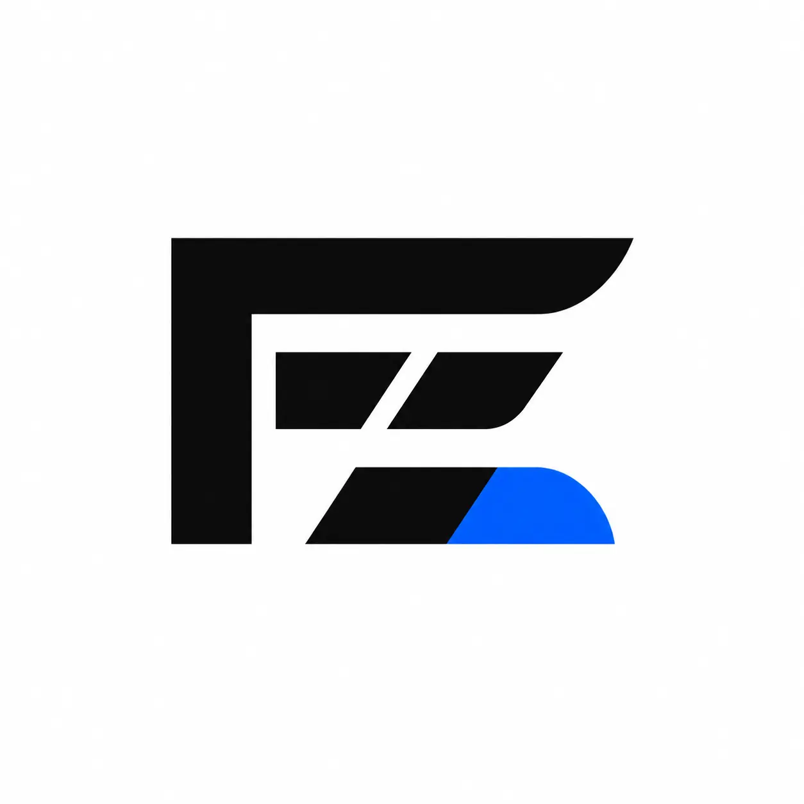

<template id="scene-05-template">
  <div data-composition-id="scene-05" data-width="1920" data-height="1080" class="scene scene--final">
    
    <div class="scene-content">
      <div class="scene-head">
        <div class="final-brand">
          
          <span class="final-wordmark">FRANDELEY<small>MUSIC MEETS TOMORROW</small></span>
        </div>
        <p class="scene-label">En validation avec les artistes</p>
        <h2 class="scene-title">À construire<br />ensemble<span class="blue-period">.</span></h2>
        <p class="scene-copy">Un concept de pré-lancement à construire avec les artistes.</p>
        <div class="final-cta">Découvrir le projet <span>↗</span></div>
      </div>
      <div class="scene-meta"><span>FRANDELEY · CONCEPT EN VALIDATION</span><span>05 / 05</span></div>
    </div>
    <script>
      window.__timelines = window.__timelines || {};
      const tl = gsap.timeline({ paused: true });
      tl.from("[data-composition-id='scene-05'] .final-brand", { opacity: 0, y: -21, duration: 0.48, ease: "expo.out" }, 0.08);
      tl.from("[data-composition-id='scene-05'] .scene-label", { opacity: 0, x: 30, duration: 0.38, ease: "power3.out" }, 0.24);
      tl.from("[data-composition-id='scene-05'] .scene-title", { opacity: 0, y: 46, duration: 0.6, ease: "power2.out" }, 0.36);
      tl.from("[data-composition-id='scene-05'] .scene-copy", { opacity: 0, x: -30, duration: 0.48, ease: "circ.out" }, 0.76);
      tl.from("[data-composition-id='scene-05'] .final-cta", { opacity: 0, scale: 0.94, duration: 0.46, ease: "back.out(1.12)" }, 1.01);
      tl.from("[data-composition-id='scene-05'] .scene-meta", { opacity: 0, y: 14, duration: 0.4, ease: "sine.out" }, 1.28);
      tl.fromTo("[data-composition-id='scene-05'] .scene-photo", { scale: 1.035 }, { scale: 1, duration: 4.2, ease: "none" }, 0);
      window.__timelines["scene-05"] = tl;
    </script>
  </div>
</template>
